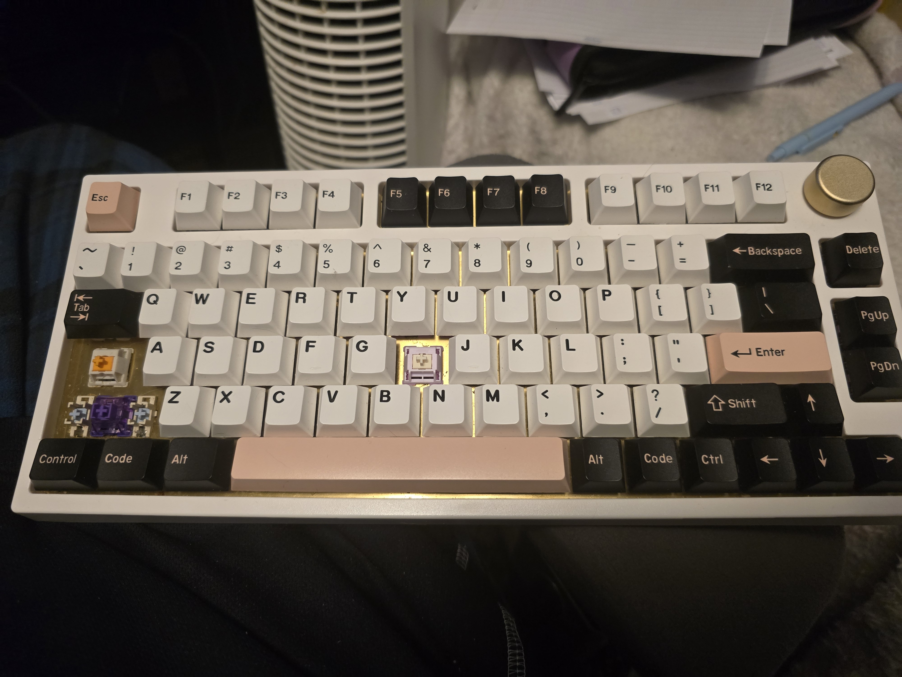

My Projects
-

This is a tracker from when I followed a DIY project. They managed to last the exact 2 years I needed them to before they all fried. I like this work because I love tinkering with things.
-

This is a keyboard I put together. It was actually a pretty good experience. As with the other one, I love tinkering and so I tinkered until I found a switch layout and sound I liked from this keyboard. Its soft but with some resistance, it also
thocks
. -

This is one of the models I have textured. I also find texturing models very meditative.